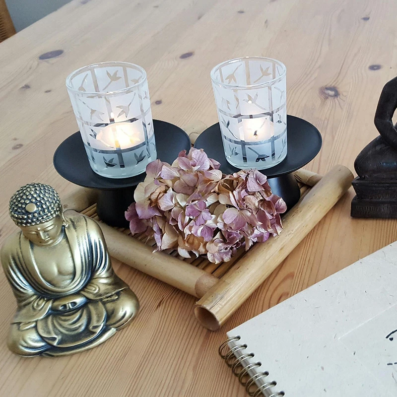

療癒
療癒，是在我們感到受傷、疲憊或失衡時，給自己一段修復與安撫的過程。當生活壓力累積、情緒被壓抑、身體長期緊繃時，可能會感覺到心累、睡不好、提不起精神，這些並不是脆弱，而是身心在提醒我們：需要被好好照顧了。
療癒並非是讓自己馬上變好，也不是否定正在發生的感受，而是願意先停下來，看見自己此刻的狀態。透過休息、呼吸、傾聽內在、表達情緒，讓身體與內心慢慢回到安全與穩定的頻率。當感受被看見被理解，修復自然就會開始。
療癒是一種回應式的照顧，它發生在「需要的時候」，不追求完美，只看見真實。真正的療癒，不是驅趕痛苦，而是在痛苦當中，學會對自己溫柔。當我們願意開始好好對待自己，身心便能逐步恢復力量，重新回歸到本質的原廠設定。

療育
療育，則是一種長期、持續的身心照顧方式。它發生在每一天的生活之中，不一定是因為身體或心理出了問題，而是為了保持身心不容易走到過度消耗與失衡。就像我們每天吃飯、睡覺一樣，是對健康的日常培養。
它包含了規律的作息、適度的活動、穩定的情緒覺察，以及對自我狀態的關心。這些看似簡單的行為，其實是在為身體與心理建立安全感，讓我們能在面對壓力時，有比較穩定的基礎去承接。
與「療癒」不同的是，療育不會等到累壞了才開始，而是在平時就養成習慣，慢慢累積能量。它不追求快速改變，而是更重視長期的陪伴與一致性。當療育成為生活的一部分，身心會更有彈性，也更不容易被外在狀況影響。
因此，療育是一種對未來的照顧，是在我們還走得動的時候，先為自己鋪好一條溫柔的路。
生理保養｜照顧好身體，是一切健康的起點
生理保養，顧名思義就是要把身體當成一位最重要的夥伴來細心照顧。我們的身體每天都非常努力運作，幫助我們體驗、思考、學習與感受，如果長期作息失衡、熬夜、飲食不規律、缺乏休息，身體就會透過疲倦、頭痛、失眠或生病、不舒服的身體語言來提醒我們：「我需要被照顧了。」
好的身體保養，其實並不複雜。吃好睡飽、適度運動活絡身體，就是最基本也最重要的關鍵。規律的作息能幫助身體建立安全感，良好的睡眠能幫助身體細胞自行修復，溫和的運動則能促進血液循環，讓身體更有精神。
當我們願意慢下來，聆聽身體的感受，善待自己，不強迫自己硬撐，身體自然就會變得放鬆，也會漸漸恢復力量。保養不是追求完美，而是每天多愛惜自己一點。身體被好好接住的同時，心情與精神自然也會跟著穩定下來。
心理調節｜學會和情緒相處，而不是對抗它
心理調節，是讓我們學習如何看見、理解並照顧自己的情緒。每個人都會有開心、難過、生氣或害怕的時候，這些情緒本身並不是不好，而是此刻的內心在告訴我們：「有事情正在發生。」
很多時候，我們會習慣先把情緒忍住、不說，久了慢慢累積變成壓力，讓人感覺心很疲倦。心理調節的作用並不是要把情緒趕走，而是先停下來問問自己：「我現在的感覺是什麼？」當情緒被看見了，自然就會慢慢安靜下來。
最簡單的方式包括：深呼吸、寫下心裡的感受，或和信任的人說說話。這些行為能幫助大腦放鬆，也讓情緒有個出口。當我們願意更溫柔地對待自己的內在，不再責怪或否定自己，情緒便不會再那麼容易失控。
和情緒相處的重點，並不是要永遠保持在最快樂的狀態，而是學會在各種心情中，依然能夠照顧好自己。
靈性提升｜認識內在本質，讓心成長茁壯充滿力量
靈性提升，其實並非神祕或遙遠的事情，而是認識、理解自己的一個重要過程。它的重點不在於外在表現，而是更著重於內心的感受與選擇。當我們更清楚知道自己在想什麼、需要什麼，就比較不容易迷失或是勉強自己。
靈性提升的第一步，是學會「覺察」。覺察自己的想法、情緒與身體感受，看見它們正在發生，但不被牽動帶走。當我們發現自己常常會緊張、害怕或不安時，可以試著問問自己：「我在擔心什麼？」透過提問，能幫助我們回到內在，看見答案。
練習靜下來、呼吸、或與自己對話，我們慢慢會了解到哪些信念其實已經不再適合當下的自己。內在變得清明，心就會相對安定，做選擇時也能更明確方向。
靈性提升不是為了改變成另一個人，而是透過一步一步的練習，成為最懂自己的人。